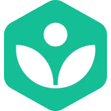
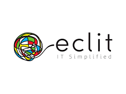

Introdução
A presença da Inteligência Artificial (IA) na educação tem se intensificado nos últimos anos, trazendo consigo novas possibilidades para o processo de ensino e aprendizagem. O uso de tecnologias inteligentes nas práticas pedagógicas representa um avanço significativo, contribuindo para tornar a educação mais dinâmica, personalizada e alinhada às necessidades do século XXI.
Mais do que uma tendência, a aplicação da IA em ambientes educacionais tem se mostrado uma ferramenta eficaz na superação de desafios históricos da educação tradicional. Diversos estudos e experiências recentes apontam os impactos positivos dessa integração tecnológica, tanto para professores quanto para alunos, abrindo caminho para uma transformação profunda na forma como o conhecimento é construído.
Neste trabalho, busca-se refletir sobre como a Inteligência Artificial tem sido utilizada no contexto educacional, analisando evidências que demonstram seu potencial para aprimorar a qualidade do ensino e tornar o aprendizado mais acessível, eficiente e significativo.
.png)
Oque é IA
A Inteligência Artificial (IA) é um campo da ciência da computação dedicado ao desenvolvimento de sistemas capazes de simular capacidades humanas, como raciocínio, aprendizagem, tomada de decisão e resolução de problemas. No contexto educacional, a IA tem sido aplicada para criar ferramentas e plataformas que apoiam professores e alunos, tornando o processo de ensino e aprendizagem mais eficiente, adaptável e interativo.
Por meio de algoritmos e análise de dados, a IA é capaz de identificar padrões de comportamento dos estudantes, ajustar conteúdos conforme o desempenho individual e oferecer suporte personalizado. Essas aplicações contribuem para uma educação mais inclusiva e centrada no aluno, alinhando-se às necessidades de uma sociedade cada vez mais conectada e digital.
As IA's
DeepSeek-Coder
Código aberto: Com um código aberto é possivel modificar a IA para formas especificas, ou até mesmo melhorar e compartilhar com outros usuarios, levando a uma evolução constante e pouca manutenção.
Foco: Como o Chat-GPT, deepseek é uma IA horizontal, e uma explicação simples, ela é focada em diversas coisas, como marketing de vendas, calculos, e até mesmo fazer códigos, porém ao contrario do Chat-GPT, ela tem mais "facilidade" com questões da áreas de exatas como fisica, matematica, e até mesmo quimica.
Planos:Gratuito - Modelo V3($0,27 por milhão de token de entrada) - Modelo R1(0,55 por milhão de token de entrada)
.png)
Mathway
Resolução instantânea de problemas matemáticos: permite que os alunos vejam soluções passo a passo, facilitando o entendimento de conceitos.
Acesso facilitado ao conteúdo: funciona em diferentes dispositivos e pode ser usada a qualquer hora, promovendo o estudo autônomo.
Planos:Gratuito - Premium(Mensal - R$40,90)
.jpg)
Black box
Suporte ao aprendizado de programação: oferece explicações detalhadas e sugestões de código, ajudando alunos a entender lógica e sintaxe.
Feedback automatizado: aponta erros no código e propõe correções em tempo real, acelerando o aprendizado.
Planos:Gratuito - Estudante($0,99 por semana) - Pro($1,99 por semana) - Equipe($4,99 por semana)
.png)
Khanmigo
Prática de idiomas com IA: simula conversas naturais, permitindo que os alunos pratiquem línguas estrangeiras com fluência.
Adaptação ao nível do aluno: ajusta o vocabulário e a dificuldade conforme o desempenho individual.
Planos:Alunos($4 por mês) - Professor(Gratuito)
Eclit
Tutoria personalizada: atua como um tutor virtual que responde dúvidas, guia o raciocínio e estimula o pensamento crítico.
Integração com conteúdos pedagógicos: funciona dentro da Khan Academy, alinhado ao currículo, apoiando professores e alunos.
Planos:Livre(Gratuito) - Plus($10 ao mês) - Pro($42 ao mês) - Team($65 ao mês)
Créditos
Participantes do Grupo
Guilerme Inacio - Felipe Vitorino - Nicolas Dalvi - Gabriel Wirdt - Renato Roda
Imagens usadas
Gerada por:Chatgpt(Premium);
Google
Slides
Felipe Vitorino
Site
Felipe Vitorino